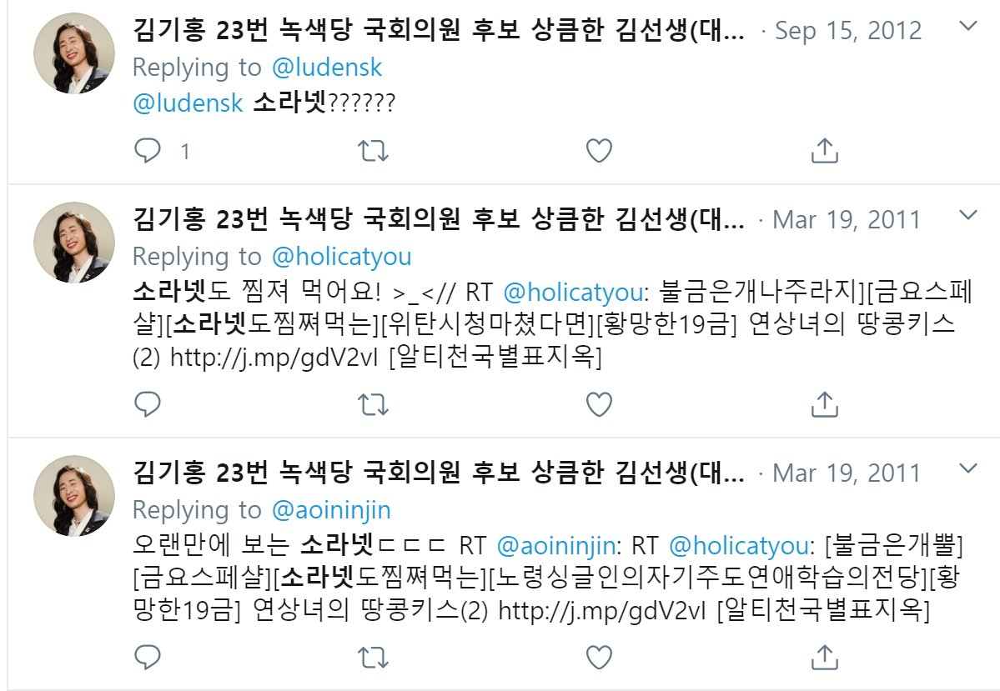
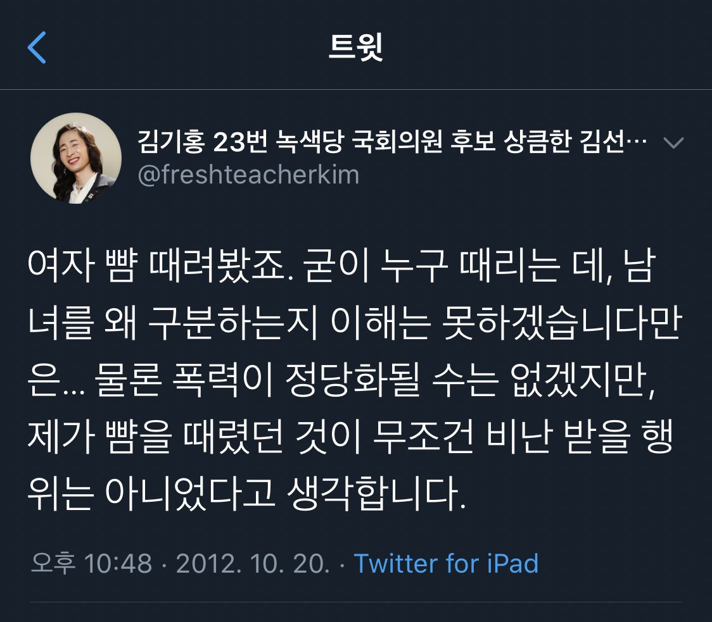
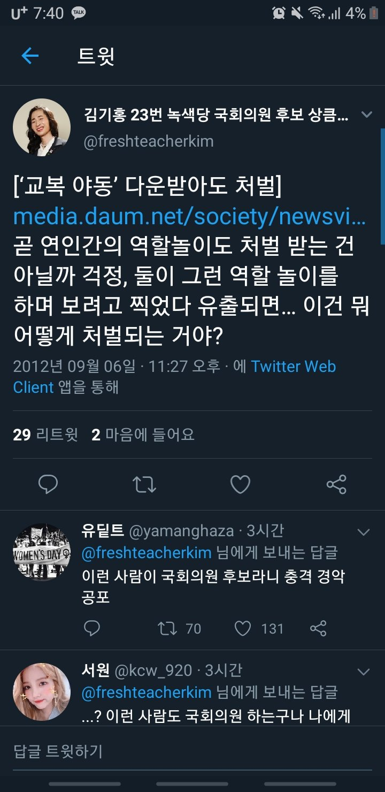

대한민국의 정당이다. 전세계 녹색당 네트워크(Global Greens)의 일원이며 서울, 경기, 대구, 부산, 충남에 각각 지역당을 가지고 있다. 현재 공동운영위원장에 성미선이 재임하고 있다.
2018년 제주도지사 후보로 출마한 바 있는 고은영이 비례순번 1번으로 출마하였다. 순번 순으로 김혜미, 성지수, 김기홍, 최정분 총 5인이 비례대표 후보로 선출되었다.3 2020년 3월 16일 녹색당은 미래당, 기본소득당과 함께 비례연합 정당에 동참하기로 결정하였다.4 그러나 3월 18일 녹색당은 더불어민주당의 독선을 비난하며 연합정당 참여 결정을 취소하였다.5
신지예가 서울시장 후보로 출마하여 1.7%의 득표율(8만2874표)을 기록하고 4위에 올랐다.6 공개적으로 페미니즘 지지를 밝혔고, 선거벽보가 실제로 훼손되며 화제가 되었다.7 제주도지사 후보로 출마한 고은영은 3.49%의 득표율(1만85표)로 3위에 올랐다.
정당 득표율 0.76%을 기록하였다. 공동운영위원장(공동대표)에 김주온, 그리고 하승수의 뒤를 이어 최혁봉이 재임하였다.8
정당 득표율 0.48%을 기록하였다.
2020년 4월 초, 익명의 트위터 유저들은 퀴어인권활동가이자 트랜스젠더로 알려진 김기홍 녹색당 비례대표 후보의 지난 트윗에서 보이는 낮은 성인지감수성에 대해 비판하였다. 대표적으로 아래의 트윗글들이 문제시되었다.
   |
김기홍 전 비례대표 후보의 트위터 계정(@freshteacherkim) 캡처. |
논란이 진화되지 않자, 4월 10일, 김기홍은 자신의 트위터 계정(@freshteacherkim)을 폭파하였다. 4월 11일, 녹색당은 성명을 내어 김기홍이 자진 사퇴하였다고 밝혔다.
녹색당 당직자가 신지예 전 공동운영위원장에게 성폭력을 저지른 사건이다. 2020년 3월 25일 녹색당은 공지를 통해 피해자의 공론화 이전 사건을 인지하지 못한 점을 사과하였다. 가해자는 이미 탈당하였음을 아울러 밝혔다.10
비남성 문서 참조.
2018년 서울시장 후보캠프 홍보국장이었고 현 녹색당 반상근 활동가로 일하는 이은정이 박정경수 전국사무처장의 젠더폭력 실태를 고발하였다. 해당고발글에 의하면, 2019년 3월 이래 여성당직자들을 향한 가해자의 젠더폭력이 지속되었으나 녹색당은 피해사실을 축소은폐하였으며 2차가해를 저질렀다. 2019년 2월 개설된 트위터 녹색당 젠더폭력 공론화(@KgreensMisogyny) 계정에서 녹색당 여성혐오에 대한 제보를 받고 있다.
당원 A씨가 과거 여자친구였던 여성 당원 B씨에게 데이트폭력을 저지른 사건이다. 당내에서 접근금지조치를 내렸으나 가해자는 이를 어기고 문자, 전화, 스토킹 등을 자행하였다. 녹색당은 가해자에게 '당원 정지 1년'과 '데이트폭력 교육 이수'를 명했으나, 처벌의 가벼운 정도가 논란이 되었다.11
청년녹색당 공동운영위원장 진일석이 청년녹색당 활동가 ㄴ씨에게 데이트폭력을 저지른 사건이다. 피해자는 2016년 6월 25일 청년녹색당 운영위원회에 성폭력 사실을 고발하였다. 가해자는 해당 사건을 '평등문화 침해사건'으로 규정하고 위원장직에서 사퇴하였다.12 청년녹색당 운영위원회 역시 해당 사건을 '평등문화 침해사건'으로 공식화해 논란을 낳았다. 또한 운영위원회가 조직한 사건 대응기구가 가해자의 지인으로 구성되고, 피해자 대리인을 지정하지 않아 물의가 되었다. 피해자는 자살을 시도했으나 운영위원회는 이를 피해자의 자살 '위협'으로 비난하였다. 청년녹색당 측은 피해자의 사과를 받아냈고, 피해자는 탈당하였다. 가해자는 당원 자격을 유지하였다.13
2016년 11월 21일 상위조직인 녹색당은 입장문을 통해 피해자에게 사과의 뜻을 전달하였다. 같은 날 청년녹색당 역시 페이스북을 통해 사과문을 게시하였다.
2015년에는 남성 당원이 여름캠프에서 여성 당원 4인을 성추행하였다. 2014년에는 녹색당 창립멤버가 인권공부모임에서 만난 미성년자를 성추행해 문제가 되었다.